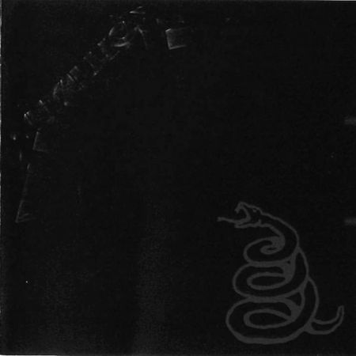

Metallica
L'album Metallica sort en 1991. Avec sa pochette presque entièrement noire, il est rapidement surnommé le Black Album tant par les fans que les membres du groupe. Cet album est à l'heure actuelle le plus grand succès commercial du groupe, avec plus de 30 millions d'exemplaires vendus à travers le monde3. L'album marque une évolution importante dans le style du groupe. Les tempos sont plus lents, les morceaux sont plus courts et leurs structures beaucoup plus simples, aspirant ainsi à du simple rock. C'est principalement un album de heavy metal, et il n'y a plus beaucoup de traces de thrash metal. Par son côté plus « commercial » que les précédents albums du groupe, qui a déplu à un certain nombre de fans de la première heure, il lui a permis d'atteindre un plus large public. C'est aussi le premier album du groupe produit par Bob Rock qui restera leur producteur jusqu'à St. Anger. Comme dans ...And Justice for All, Jason Newsted ne collabore qu'à un seul titre dans l'écriture des chansons. Les titres les plus connus sont Enter Sandman, Sad but True, The Unforgiven, Nothing Else Matters, Wherever I May roam (tous sortis en single). Malgré son côté plus accessible, l'album Metallica reste une production respectée dans le milieu du heavy metal. On note par ailleurs l'importance croissante que prennent les ballades ou power ballads pour Metallica (Nothing Else Matters, The Unforgiven, deux ballades très connues). Jason Newsted utilisera pour la première fois dans un album de Metallica une basse 12 cordes, dans Wherever I May Roam. Enter Sandman fut notamment composé par Lars Ulrich à partir d'un riff que Kirk Hammett avait composé à 3h15 du matin. James Hetfield nous informe dans le documentaire "Classic Albums: Metallica" (2002), que la plupart des chansons partaient d'un simple riff, qui fut exploité et poussé jusqu'au maximum. Certaines personnes diront que : "cet album est heavy sans être thrash, donc mesuré mais puissant" (David Fricke, éditeur du magazine Rolling Stone). D'autres diront qu'avec cet album Metallica devient "Le Led Zeppelin d'une génération" (Cliff Burnstein : Co-Manageur). Les paroles de cet album sont souvent plus personnelles que celles des albums précédents. The God That Failed en est l'exemple le plus concret, James Hetfield y parlant de la secte religieuse dans laquelle ses parents étaient embrigadés.
